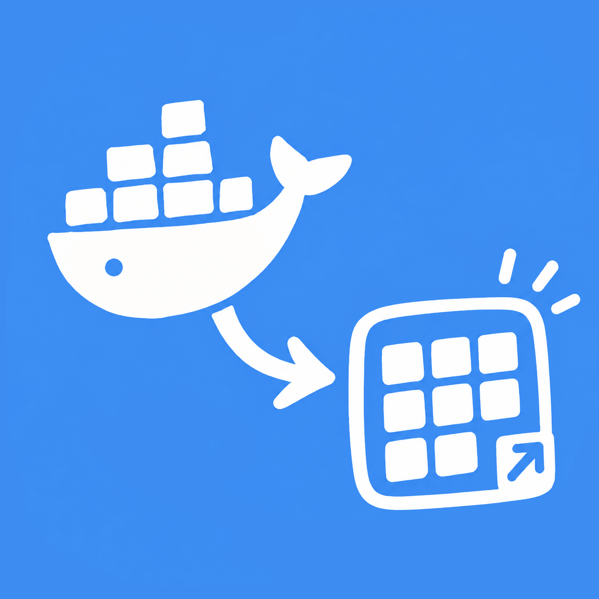

| 端口 | 进程 / 容器 | 桌面图标 | 操作 | ||||
|---|---|---|---|---|---|---|---|
| 正在加载端口数据... | |||||||
| 图标 | 名称 | 类型 | 目标 / 映射端口 | 打开方式 | 访问权限 | 运行状态 | 操作 | |
|---|---|---|---|---|---|---|---|---|
| 暂无已创建的桌面图标 | ||||||||
| PID | 进程名称 | 用户 | 状态 | CPU | 物理内存 (RSS) | 磁盘 I/O | 上下行网速 | 所属容器 | |
|---|---|---|---|---|---|---|---|---|---|
| 正在加载进程数据... | |||||||||
fn-docker-to-desktop.log
正在载入系统日志...
系统设置
文字颜色:
预设文字颜色
背景颜色:
预设背景颜色
支持外链或已下载到本地的 /icons/xxx.png 路径
支持 PNG、JPG、SVG、ICO 格式

把 Docker 放到桌面宿主机信息
| 主机名称 | 操作系统 | 内核版本 | 架构 | 主 IPv4 地址 | 运行时间 | |
|---|---|---|---|---|---|---|
| - | - | - | - | - | - |
网络接口
| 网卡名称 | 类型 | MAC 地址 | IPv4 地址 | 状态 | |
|---|---|---|---|---|---|
| 正在获取网络接口... | |||||
🥺 请作者吃顿外卖
「把 Docker 放到桌面」是一款开源免费应用。如果它为您带来了便利与价值，欢迎扫描下方二维码投喂支持，感谢您的认可与鼓励！☕

微信支付

支付宝支付